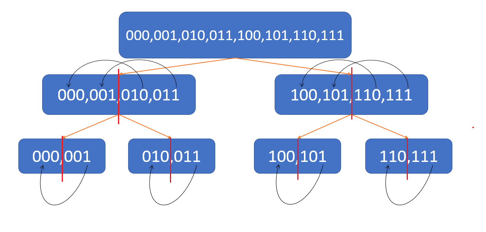

原題網址 : https://tioj.ck.tp.edu.tw/problems/2023
Description
給你 $n$ 種食材以及 $m$ 種好吃度為 $v_i$ 的食材搭配方式，
在這 $2^n-1$ 種非空食材組合當中如果一個組合包含第 $i$ 種搭配方式就會增加 $v_i$ 的好吃度。
現在你要依序做 $2^n-1$ 次種組合，第 $x$ 次做的組合若好吃度為 $sum_x$ 則總好吃度增加 $x \times sum_x$。
求在所有製作順序中最大的總好吃度。
- $n \le 22$
- $m \le 10^5$
- $-100 \le v_i \le 100$
Solution
首先我們會發現，只要求出所有組合的好吃度，再讓好吃度最小的先做就會是最大的總好吃度。
那問題就只剩下怎麼求出所有組合的好吃度了。
首先我想到的是一個顯然TLE的作法，對於每種組合去枚舉他的所有子集合並把好吃度加起來。
1
2
3
4
5
| for(int i=1 ; i<(1<<n) ; ++i){
for(int j=i ; j ; j=(j-1)&i){
tot[i] += dp[j];
}
}
|
不過往這方向想要優化似乎是不太可能了，於是就去求助學長了XD
不過學長只跟我說了是分治，我想了半天也想不出來，就把 bitmask 拿去畫成樹就做出來了ww
首先我們把 $[0 , 2^n-1]$ 整個區間做分治，畫成圖如下。

我們會發現，如果我們把上圖每個節點分成兩半(紅線)，對於每個節點左邊第 $i$ 個 bitmask 都會是右邊第 $i$ 個 bitmask 的子集合，
因為左邊的已經幫我們把它涵蓋的子集合都加到它身上了，我們只要加上它就好，
所以我們只要讓每一層在節點右方的組合方式加上他左邊對應到的好吃度就可以得到最後每個組合的好吃度總和了。
(也就是箭頭右方的bitmask要加上箭頭左方bitmask當前的好吃度)
AC Code :
1
2
3
4
5
6
7
8
9
10
11
12
13
14
15
16
17
18
19
20
21
22
23
24
25
26
27
28
29
30
31
32
33
34
| #include<bits/stdc++.h>
using namespace std;
const int maxn = (1<<22);
long long dp[maxn];
void solve(int l , int r){
if(l == r) return;
int mid = (l+r)>>1;
solve(l , mid);
solve(mid+1 , r);
for(int i=mid+1 ; i<=r ; ++i) dp[i] += dp[l+(i-mid-1)];
}
signed main(){
ios::sync_with_stdio(false),cin.tie(0),cout.tie(0);
int n , m ;
cin >> n >> m ;
while(m--){
string s;
int val;
cin >> s >> val;
int num=0;
for(int i=0 ; i<n ; ++i){
if(s[i] == '1')
num |= (1<<(n-i-1));
}
dp[num] = val;
}
solve(0,(1<<n)-1);
sort(dp+1 , dp+(1<<n));
long long ans = 0ll ;
for(int i=1 ; i<(1<<n) ; ++i){
ans += 1ll * i * dp[i];
}
cout << ans << '\n';
}
|
Author:
HaKkaz
License:
Copyright (c) 2021 CC-BY-NC-4.0 LICENSE